1. مقدمة
ملف PDF الخاص بهذا المستند متاح |HERE|.
الأمثلة الواردة في هذا المستند متاحة |HERE|.
نهدف هنا إلى تقديم المفاهيم المهمة لـ Spring MVC، وهو إطار عمل ويب جافا يوفر بيئة لتطوير تطبيقات الويب وفقًا لنموذج MVC (النموذج – العرض – وحدة التحكم)، وذلك باستخدام الأمثلة. يُعد Spring MVC فرعًا من منظومة Spring [http://projects.spring.io/spring-framework/]. كما نقدم محرك العرض Thymeleaf [http://www.thymeleaf.org/].
هذه الدورة موجهة للقراء الذين يتمتعون بإتقان حقيقي للغة Java. وليس من الضروري معرفة البرمجة على الويب.
على الرغم من تفصيل هذا المستند، إلا أنه ربما يكون غير مكتمل. Spring هو إطار عمل ضخم له العديد من الفروع. للتعمق في Spring MVC، يمكن استخدام المراجع التالية:
- وثيقة مرجعية لإطار عمل Spring [http://docs.spring.io/spring/docs/current/spring-framework-reference/pdf/spring-framework-reference.pdf]؛
- تتوفر العديد من الدروس التعليمية حول Spring على موقع URL [http://spring.io/guides]
- موقع [developpez.com] المخصص لـ Spring [http://spring.developpez.com/].
تمت صياغة هذا المستند بحيث يمكن قراءته دون الحاجة إلى جهاز كمبيوتر. ولذلك، تم تضمين العديد من لقطات الشاشة.
1.1. Sources
لهذا المستند مصدران رئيسيان:
- [Iمقدمة إلى إطار عمل ASP.NET MVC من خلال الأمثلة (2013)]. Spring MVC و ASP.NET MVC هما إطاران متشابهان، وقد تم إنشاء الثاني بعد الأول بفترة طويلة. ولكي أتمكن من مقارنة الإطارين، اتبعت نفس التسلسل الذي اتبعته في الوثيقة الخاصة بـ ASP.NET و MVC؛
- لا يحتوي المستند الخاص بـ ASP.NET MVC في الوقت الحالي (ديسمبر 2014) على دراسة حالة مع حلها. وقد استخدمت هنا دراسة الحالة الواردة في المستند [Tutoriel AngularJS / Spring 4] وقمت بتعديلها على النحو التالي:
- دراسة الحالة في [مثال على عميل/خادم - AngularJS 1.x / Spring 4 (2014) ] تتناول تطبيقًا من نوع «العميل/الخادم» حيث يكون الخادم عبارة عن خدمة ويب / jSON مبنية باستخدام Spring MVC، والعميل عبارة عن عميل AngularJS،
- في هذا المستند، نستخدم نفس خدمة الويب / jSON، لكن العميل هو تطبيق ويب ثنائي الطبقة [client jQuery] / [service web / jSON]؛
بالإضافة إلى هذه المصادر، بحثتُ على الإنترنت عن إجابات لأسئلتي. وكان موقع [http://stackoverflow.com/] هو الأكثر فائدة لي في ذلك الوقت.
1.2. الأدوات المستخدمة
تم اختبار الأمثلة التالية في البيئة التالية:
- جهاز يعمل بنظام Windows 8.1 Pro 64 بت؛
- JDK 1.8؛
- IDE Spring Tool Suite 3.6.3 (انظر الفقرة 9.3)؛
- متصفح Chrome (لم يتم استخدام متصفحات أخرى)؛
- ملحق Chrome [Advanced Rest Client] (انظر الفقرة 9.6)؛
انتبه إلى JDK 1.8. تستخدم إحدى طرق دراسة الحالة طريقة من حزمة [java.lang] في Java 8.
جميع الأمثلة عبارة عن مشاريع Maven يمكن فتحها باستخدام أي من برامج Eclipse أو NetBeans. وفيما يلي، تأتي لقطات الشاشة من Spring Tool Suite، وهو إصدار معدّل من Eclipse.
1.3. الأمثلة
تتوفر الأمثلة في URL و[http://tahe.developpez.com/java/springmvc-thymeleaf] على شكل ملف zip قابل للتنزيل.
 |
لتحميل جميع المشاريع في STS، اتبع الخطوات التالية:
 |
 |
- في ملف [1-3]، قم باستيراد مشاريع Maven؛
 |
- في [4]، حدد مجلد الأمثلة؛
- في [5]، حدد جميع المشاريع الموجودة في المجلد؛
- في [6]، قم بالتأكيد؛
- في [7]، حدد المشاريع المستوردة؛
1.4. دور Spring MVC في تطبيق الويب
لنضع Spring MVC في سياق تطوير تطبيق ويب. في أغلب الأحيان، سيتم بناء هذا التطبيق على بنية متعددة الطبقات مثل التالية:
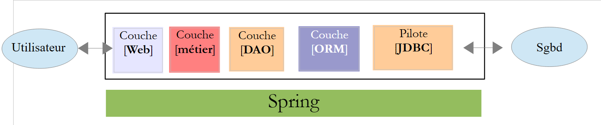 |
- الطبقة [Web] هي الطبقة التي تتفاعل مع مستخدم تطبيق الويب. يتفاعل المستخدم مع تطبيق الويب من خلال صفحات الويب التي يتم عرضها بواسطة متصفح. يقع Spring MVC في هذه الطبقة وحسب؛
- تقوم الطبقة [métier] بتنفيذ قواعد إدارة التطبيق، مثل حساب الراتب أو الفاتورة. تستخدم هذه الطبقة البيانات الواردة من المستخدم عبر الطبقة [Web] ومن الطبقة SGBD عبر الطبقة [DAO]؛
- تتولى الطبقة [DAO] (كائنات الوصول إلى البيانات)، والطبقة [ORM] (أداة التعيين العلائقي للكائنات)، وبرنامج التشغيل JDBC إدارة الوصول إلى بيانات الطبقة SGBD. تقوم الطبقة [ORM] بدور الجسر بين الكائنات التي تتعامل معها الطبقة [DAO] والصفوف والأعمدة في جداول قاعدة البيانات العلائقية. وسنستخدم هنا ORM Hibernate. تسمح مواصفة تُعرف باسم JPA (Java Persistence API) بالتجريد من ORM المستخدم إذا كان هذا الأخير ينفذ هذه المواصفات. وهذا هو الحال بالنسبة لـ Hibernate وغيرها من ORM Java. لذلك سنطلق من الآن فصاعدًا على الطبقة ORM اسم الطبقة JPA؛
- ويتم دمج الطبقات بواسطة إطار عمل Spring؛
وستستخدم معظم الأمثلة الواردة فيما يلي طبقة واحدة فقط، وهي الطبقة [Web]:
 |
ومع ذلك، ستختتم هذه الوثيقة بإنشاء تطبيق ويب متعدد الطبقات:
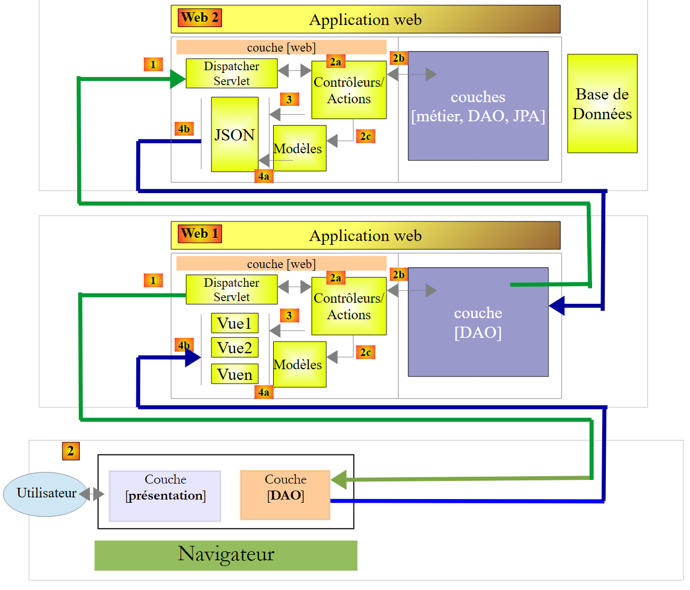 |
سيتصل المتصفح بتطبيق [Web1] الذي تم تنفيذه بواسطة Spring MVC / Thymeleaf والذي سيحصل على بياناته من خدمة ويب [Web2] التي تم تنفيذها أيضًا باستخدام Spring MVC. وسيتصل هذا التطبيق الويب الثاني بقاعدة بيانات.
1.5. نموذج تطوير Spring MVC
يقوم Spring MVC بتنفيذ نموذج الهندسة المعروف باسم MVC (النموذج – العرض – وحدة التحكم) بالطريقة التالية:
 |
تتم معالجة طلب العميل على النحو التالي:
- الطلب - تكون URL المطلوبة على شكل http://machine:port/contexte/Action/param1/param2/....?p1=v1&p2=v2&... يستخدم [Front Controller] ملف تكوين أو تعليقات توضيحية في Java لتوجيه الطلب إلى وحدة التحكم الصحيحة والإجراء الصحيح داخل تلك الوحدة. ولذلك، يستخدم الحقل [Action] الموجود في URL. أما باقي أجزاء URL و[/param1/param2/...] فتتكون من معلمات اختيارية سيتم تمريرها إلى الإجراء. حرف C في MVC هو هنا السلسلة [Front Controller, Contrôleur, Action]. إذا لم يتمكن أي وحدة تحكم من معالجة الإجراء المطلوب، فسيرد خادم الويب بأن URL المطلوب لم يتم العثور عليه.
- المعالجة
- يمكن للإجراء المختار استخدام المعلمات parami التي أرسلها إليه الإجراء [Front Controller]. وقد تأتي هذه المعلمات من عدة مصادر:
- مسار [/param1/param2/...] الخاص بـ URL،
- من المعلمات [p1=v1&p2=v2] الخاصة بـ URL,
- من المعلمات التي يرسلها المتصفح مع طلبه؛
- أثناء معالجة طلب المستخدم، قد تحتاج العملية إلى الطبقة [métier] و [2b]. بمجرد معالجة طلب العميل، قد يؤدي ذلك إلى استدعاء استجابات متنوعة. ومن الأمثلة النموذجية على ذلك:
- صفحة خطأ إذا تعذر معالجة الطلب بشكل صحيح
- صفحة تأكيد في الحالات الأخرى
- تطلب الإجراء عرض طريقة عرض معينة [3]. ستعرض طريقة العرض هذه البيانات التي نسميها نموذج طريقة العرض. وهذا هو الحرف M في MVC. ستقوم الإجراء بإنشاء هذا النموذج M [2c] وستطلب عرض طريقة عرض V [3]؛
- الاستجابة - تستخدم طريقة العرض V المختارة النموذج M الذي أنشأته العملية لتهيئة الأجزاء الديناميكية من الاستجابة HTML التي يتعين عليها إرسالها إلى العميل، ثم ترسل هذه الاستجابة.
الآن، دعونا نوضح العلاقة بين بنية الويب MVC وبنية الطبقات. وفقًا للتعريف الذي نعطيه للنموذج، قد يكون هذان المفهومان مرتبطين أو غير مرتبطين. لنأخذ تطبيق ويب Spring أحادي الطبقة MVC كمثال:
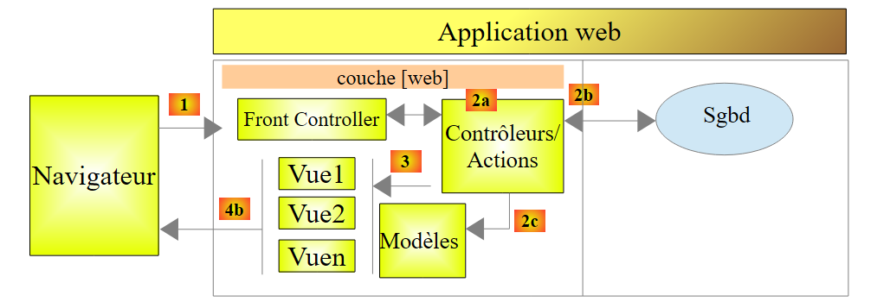 |
إذا قمنا بتنفيذ الطبقة [Web] باستخدام Spring MVC، فسنحصل بالفعل على بنية ويب MVC ولكنها لن تكون بنية متعددة الطبقات. هنا، ستتولى الطبقة [web] كل شيء: العرض، والعمليات التجارية، والوصول إلى البيانات. وستقوم الإجراءات (Actions) بهذه المهام.
الآن، لننظر إلى بنية ويب متعددة الطبقات:
 |
يمكن تنفيذ الطبقة [Web] دون استخدام إطار عمل ودون اتباع النموذج MVC. وبذلك تكون لدينا بنية متعددة الطبقات، لكن الطبقة الويب لا تنفذ النموذج MVC.
على سبيل المثال، في عالم .NET، يمكن تنفيذ الطبقة [Web] المذكورةأعلاه يمكن تنفيذها باستخدام ASP.NET و MVC، وبذلك نحصل على بنية متعددة الطبقات تحتوي على طبقة [Web] من النوع MVC. وبعد ذلك، يمكن استبدال هذه الطبقة ASP.NET وMVC بطبقة ASP.NET تقليدية (WebForms) مع الحفاظ على بقية (المجال، DAO، ORM) كما هي. وبذلك نحصل على بنية طبقية تحتوي على طبقة [Web] التي لم تعد من النوع MVC.
في MVC، ذكرنا أن النموذج M هو نموذج العرض V، c.a.d، أي مجموعة البيانات المعروضة بواسطة العرض V. وهناك تعريف آخر للنموذج M الخاص بـ MVC، وهو:
 |
يعتبر العديد من المؤلفين أن ما يقع على يمين الطبقة [Web] يشكل النموذج M الخاص بـ MVC. لتجنب أي غموض، يمكننا أن نتحدث عن:
- عن «نموذج المجال» عند الإشارة إلى كل ما يقع على يمين الطبقة [Web]
- عن «نموذج العرض» عند الإشارة إلى البيانات المعروضة بواسطة عرض V
وفيما يلي، سيشير مصطلح «نموذج M» حصريًّا إلى نموذج العرض V.
1.6. مشروع Spring الأول MVC
من الآن فصاعدًا، سنعمل باستخدام Spring Tool Suite (IDE)، وهو إصدار مخصص من Eclipse لـ Spring. يقدم الموقع [http://spring.io/guides] دروسًا تعليمية للمبتدئين لاكتشاف منظومة Spring. سنتبع أحد هذه الدروس لاكتشاف إعدادات Maven اللازمة لمشروع Spring MVC.
ملاحظة: قد يتعذر على معظم المبتدئين فهم تفاصيل المشروع. وهذا ليس مهمًا. فهذه التفاصيل موضحة في أجزاء لاحقة من هذا المستند. وسنكتفي بتكرار الخطوات العملية.
1.6.1. مشروع العرض التوضيحي
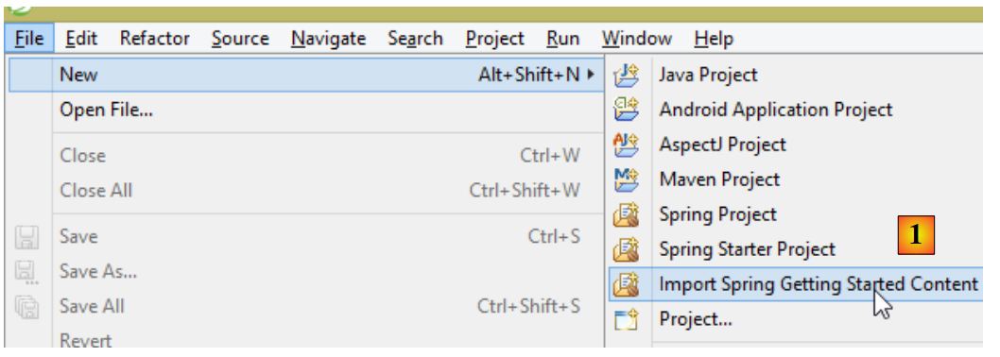 |
- في [1]، نقوم باستيراد أحد أدلة Spring؛
 |
- إلى [2]، نختار المثال [Serving Web Content]؛
- في [3]، نختار مشروع Maven؛
- في [4]، نأخذ النسخة النهائية من الدليل؛
- في [5]، نقوم بالتحقق من الصحة؛
- في [6]، المشروع المستورد؛
دعونا نلقي نظرة على المشروع، بدءًا من تكوين Maven الخاص به.
1.6.2. تكوين Maven
الملف [pom.xml] هو كما يلي:
<?xml version="1.0" encoding="UTF-8"?>
<project xmlns="http://maven.apache.org/POM/4.0.0" xmlns:xsi="http://www.w3.org/2001/XMLSchema-instance"
xsi:schemaLocation="http://maven.apache.org/POM/4.0.0 http://maven.apache.org/xsd/maven-4.0.0.xsd">
<modelVersion>4.0.0</modelVersion>
<groupId>org.springframework</groupId>
<artifactId>gs-serving-web-content</artifactId>
<version>0.1.0</version>
<parent>
<groupId>org.springframework.boot</groupId>
<artifactId>spring-boot-starter-parent</artifactId>
<version>1.1.9.RELEASE</version>
</parent>
<dependencies>
<dependency>
<groupId>org.springframework.boot</groupId>
<artifactId>spring-boot-starter-thymeleaf</artifactId>
</dependency>
</dependencies>
<properties>
<start-class>hello.Application</start-class>
</properties>
<build>
<plugins>
<plugin>
<groupId>org.springframework.boot</groupId>
<artifactId>spring-boot-maven-plugin</artifactId>
</plugin>
</plugins>
</build>
<repositories>
<repository>
<id>spring-milestone</id>
<url>https://repo.spring.io/libs-release</url>
</repository>
</repositories>
<pluginRepositories>
<pluginRepository>
<id>spring-milestone</id>
<url>https://repo.spring.io/libs-release</url>
</pluginRepository>
</pluginRepositories>
</project>
- الأسطر 6-8: خصائص مشروع Maven. ينقص علامة [<packaging>] التي تشير إلى نوع الملف الناتج عن تجميع Maven. وفي حالة عدم وجودها، يتم استخدام النوع [jar]. وبالتالي، فإن التطبيق هو تطبيق قابل للتنفيذ من نوع وحدة التحكم، وليس تطبيق ويب حيث يكون التعبئة عندئذٍ [war]؛
- الأسطر 10-14: يحتوي مشروع Maven على مشروع أبوي [spring-boot-starter-parent]، وهو الذي يحدد الجزء الأكبر من تبعيات المشروع. قد تكون هذه التبعيات كافية، وفي هذه الحالة لا يتم إضافة المزيد، أو قد لا تكون كافية، وفي هذه الحالة يتم إضافة التبعيات الناقصة؛
- الأسطر 17-20: يجلب الأرتيفاكت [spring-boot-starter-thymeleaf] معه المكتبات اللازمة لمشروع Spring MVC الذي يُستخدم بالاقتران مع محرك عرض يُسمى [Thymeleaf]. يحتوي هذا الأرتيفاكت على عدد كبير جدًا من المكتبات، بما في ذلك مكتبات خادم Tomcat المدمج. وسيتم تشغيل التطبيق على هذا الخادم؛
المكتبات التي تتضمنها هذه التهيئة عديدة جدًّا:
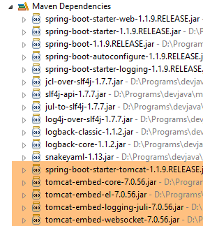 |  |
فيما يلي نرى أرشيفات خادم Tomcat.
يُعد Spring Boot فرعًا من نظام Spring [http://projects.spring.io/spring-boot/]. يهدف هذا المشروع إلى تقليل تكوين مشاريع Spring إلى أقصى حد ممكن. ولتحقيق ذلك، يقوم Spring Boot بالتكوين التلقائي استنادًا إلى التبعيات الموجودة في مسار Classpath الخاص بالمشروع. يوفر Spring Boot العديد من التبعيات الجاهزة للاستخدام. وهكذا، فإن التبعية [spring-boot-starter-thymeleaf] الموجودة في مشروع Maven السابق توفر جميع التبعيات اللازمة لتطبيق Spring MVC الذي يستخدم محرك العرض [Thymeleaf]. وبفضل هاتين الميزتين:
- التبعيات الجاهزة للاستخدام؛
- التكوين التلقائي بناءً على هذه التبعيات والقيم الافتراضية «المعقولة»، يمكننا الحصول بسرعة كبيرة على تطبيق Spring MVC جاهز للعمل. وهذا هو الحال بالنسبة للمشروع الذي ندرسه هنا؛
1.6.3. بنية تطبيق Spring MVC
تطبق Spring MVC نموذج البنية المعروف باسم MVC (النموذج – العرض – وحدة التحكم):
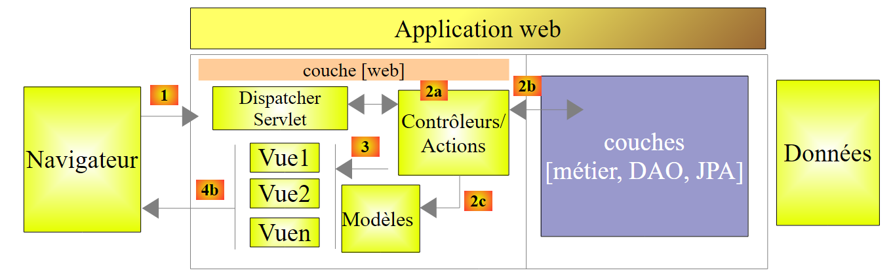 |
تتم معالجة طلب العميل على النحو التالي:
- الطلب - تكون URL المطلوبة على شكل http://machine:port/contexte/Action/param1/param2/....?p1=v1&p2=v2&... [Dispatcher Servlet] هي فئة Spring التي تعالج URL الواردة. وهي «توجه» URL إلى الإجراء الذي يجب أن يعالجها. هذه الإجراءات هي طرق لفئات معينة تسمى [Contrôleurs]. الحرف C في MVC هو هنا السلسلة [Dispatcher Servlet, Contrôleur, Action]. إذا لم يتم تكوين أي إجراء لمعالجة URL الواردة، فسترد السيرفلت [Dispatcher Servlet] بأن URL المطلوبة لم يتم العثور عليها (خطأ 404 NOT FOUND)؛
- المعالجة
- يمكن للإجراء المختار الاستفادة من المعلمات parami التي أرسلتها إليه خدمة [Dispatcher Servlet]. وقد تأتي هذه المعلمات من عدة مصادر:
- مسار [/param1/param2/...] الخاص بـ URL،
- من المعلمات [p1=v1&p2=v2] الخاصة بـ URL,
- من المعلمات التي يرسلها المتصفح مع طلبه؛
- أثناء معالجة طلب المستخدم، قد تحتاج العملية إلى الطبقة [metier] و [2b]. وبمجرد معالجة طلب العميل، يمكن أن يستدعي هذا الطلب استجابات متنوعة. ومن الأمثلة النموذجية على ذلك:
- صفحة خطأ إذا تعذر معالجة الطلب بشكل صحيح
- صفحة تأكيد في الحالات الأخرى
- تطلب الإجراء عرض طريقة عرض معينة [3]. ستعرض طريقة العرض هذه البيانات التي نسميها نموذج طريقة العرض. وهذا هو الحرف M في MVC. ستقوم الإجراء بإنشاء هذا النموذج M [2c] وستطلب عرض طريقة عرض V [3]؛
- الاستجابة - تستخدم طريقة العرض V المختارة النموذج M الذي أنشأته الإجراء لتهيئة الأجزاء الديناميكية من الاستجابة HTML التي يجب أن ترسلها إلى العميل، ثم ترسل هذه الاستجابة.
سنلقي نظرة على هذه العناصر المختلفة في المشروع قيد الدراسة.
1.6.4. وحدة التحكم C
 |
يحتوي التطبيق المستورد على وحدة التحكم التالية:
package hello;
import org.springframework.stereotype.Controller;
import org.springframework.ui.Model;
import org.springframework.web.bind.annotation.RequestMapping;
import org.springframework.web.bind.annotation.RequestParam;
@Controller
public class GreetingController {
@RequestMapping("/greeting")
public String greeting(@RequestParam(value="name", required=false, defaultValue="World") String name, Model model) {
model.addAttribute("name", name);
return "greeting";
}
}
- السطر 8: التعليق التوضيحي [@Controller] يجعل من الفئة [GreetingController] وحدة تحكم Spring، أي أن أساليبها مسجلة لمعالجة URL. وحدة التحكم Spring هي كائن فريد (singleton). يتم إنشاء نسخة واحدة منها فقط؛
- السطر 11: تشير العلامة [@RequestMapping] إلى URL الذي تعالجه الطريقة، وهو هنا URL [/greeting]. سنرى لاحقًا أن هذه القيمة URL يمكن تعيين معلمات لها وأنه من الممكن استرداد هذه المعلمات؛
- السطر 12: تقبل الطريقة معلمتين:
- [String name]: يتم تهيئة هذه المعلمة بواسطة معلمة باسم [name] في الاستعلام المعالج، على سبيل المثال [/greeting?name=alfonse]. هذه المعلمة اختيارية [required=false]، وعندما لا تكون موجودة، ستأخذ المعلمة [name] القيمة 'World' [defaultValue="World"]،
- [Model model] هو نموذج عرض. يصل فارغًا، وتقع على عاتق الإجراء (الطريقة greeting) مهمة ملئه. هذا النموذج هو الذي سيتم تمريره إلى العرض الذي سيقوم الإجراء بعرضه. لذا فهو نموذج عرض؛
- السطر 13: يتم وضع قيمة [name] في نموذج العرض. تعمل الفئة [Model] كقاموس؛
- السطر 14: تُرجع الطريقة اسم العرض الذي يجب أن يعرض النموذج الذي تم إنشاؤه. يعتمد الاسم الدقيق للعرض على تكوين [Thymeleaf]. في حالة عدم وجود هذه التهيئة، فإن العرض الذي سيظهر هنا سيكون العرض [/templates/greeting.html]، أو يجب أن يكون المجلد [templates] موجودًا في جذر مسار الفئات (Classpath) للمشروع؛
دعونا نلقي نظرة على مشروع Eclipse الخاص بنا:
 |
المجلدان [src/main/java] و [src/main/resources] هما مجلدان سيتم وضع محتوياتهما في مسار الفئات (Classpath) للمشروع. أما بالنسبة لـ [src/main/java]، فسيتم وضع الإصدارات المُجمَّعة من مصادر Java فيه. أما محتوى المجلد [src/main/resources] فيتم وضعه في مسار الفئات (Classpath) دون أي تعديل. ومن ثم، نرى أن المجلد [templates] سيكون موجودًا في مسار الفئات (Classpath) للمشروع [1].
يمكن التحقق من ذلك في نافذة [Navigator] في Eclipse [Window / Show view / Other / General / Navigator]. يتم إنشاء المجلد [target] من خلال تجميع المشروع (المسمى build). يمثل المجلد [classes] جذر مسار الفئات (Classpath). ونلاحظ أن المجلد [templates] موجود فيه.
1.6.5. الطريقة V
في MVC، رأينا للتو وحدة التحكم C ونموذج العرض M. يتم تمثيل العرض V هنا بالملف [greeting.html] التالي:
<!DOCTYPE HTML>
<html xmlns:th="http://www.thymeleaf.org">
<head>
<title>Getting Started: Serving Web Content</title>
<meta http-equiv="Content-Type" content="text/html; charset=UTF-8" />
</head>
<body>
<p th:text="'Hello, ' + ${name} + '!'" />
</body>
</html>
- السطر 2: مساحة أسماء علامات Thymeleaf؛
- السطر 8: علامة <p> (فقرة) مع سمة Thymeleaf. تحدد السمة [th:text] محتوى الفقرة. يوجد داخل سلسلة الأحرف التعبير [${name}]. وهذا يعني أننا نريد قيمة السمة [name] من قالب العرض. لكننا نتذكر أن هذه السمة قد أُدرجت في القالب بواسطة الإجراء:
model.addAttribute("name", name);
يحدد المعامل الأول اسم السمة، بينما يحدد المعامل الثاني قيمتها.
1.6.6. التنفيذ
 |
الفئة [Application.java] هي الفئة القابلة للتنفيذ في المشروع. ورمزها هو كما يلي:
package hello;
import org.springframework.boot.autoconfigure.EnableAutoConfiguration;
import org.springframework.boot.SpringApplication;
import org.springframework.context.annotation.ComponentScan;
@ComponentScan
@EnableAutoConfiguration
public class Application {
public static void main(String[] args) {
SpringApplication.run(Application.class, args);
}
}
- السطر 11: الفئة قابلة للتنفيذ باستخدام طريقة [main] الخاصة بتطبيقات وحدة التحكم. ستقوم الفئة [SpringApplication] في السطر 12 بتشغيل خادم Tomcat الموجود في التبعيات ونشر خدمة الويب عليه؛
- السطر 4: نلاحظ أن الفئة [SpringApplication] تنتمي إلى المشروع [Spring Boot]؛
- السطر 12: المعلمة الأولى هي الفئة التي تقوم بتكوين المشروع، والثانية هي المعلمات الإضافية (إن وجدت)؛
- السطر 8: تطلب العلامة التوضيحية [@EnableAutoConfiguration] من Spring Boot إجراء تكوين المشروع؛
- السطر 7: تعمل العلامة [@ComponentScan] على فحص المجلد الذي يحتوي على الفئة [Application] بحثًا عن مكونات Spring. سيتم العثور على مكون، وهو الفئة [GreetingController] التي تحمل التعليق التوضيحي [@Controller] الذي يجعلها مكونًا من مكونات Spring؛
لنقم بتشغيل المشروع:
 |
ونحصل على سجلات وحدة التحكم التالية:
- السطر 13: يتم تشغيل خادم Tomcat على المنفذ 8080 (السطر 12)؛
- السطر 17: السيرفلت [DispatcherServlet] موجود؛
- السطر 20: تم اكتشاف الطريقة [hello.GreetingController.greeting] وكذلك الطريقة URL التي تعالجها [/greeting]؛
لاختبار تطبيق الويب، نطلب URL و [http://localhost:8080/greeting]:
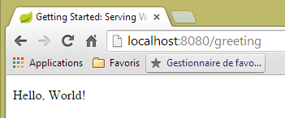 |  |
قد يكون من المفيد الاطلاع على رؤوس الرسائل التي يرسلها الخادم. وللقيام بذلك، سنستخدم المكون الإضافي لمتصفح Chrome المسمى [Advanced Rest Client] (انظر الفقرة 9.6):
 |
- في [1]، المطلوب هو URL؛
- في [2]، تُستخدم الطريقة GET؛
- في [3]، أشار الخادم إلى أنه يرسل استجابة بتنسيق HTML؛
- في [4]، الرد هو HTML؛
- في [5]، يُطلب نفس URL ولكن هذه المرة مع POST؛
- في [7]، يتم إرسال المعلومات إلى الخادم في شكل [urlencoded]؛
- في [6]، المعلمة name مع قيمتها؛
- في [8]، يُعلم المتصفح الخادم بأنه يرسل إليه معلومات [urlencoded]؛
- في [9]، رد الخادم HTML؛
لإيقاف التطبيق:
 |  | 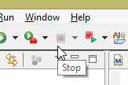 |
1.6.7. إنشاء أرشيف قابل للتنفيذ
يمكن إنشاء ملف أرشيف قابل للتنفيذ خارج Eclipse. توجد الإعدادات اللازمة في الملف [pom.xml]:
<properties>
<start-class>hello.Application</start-class>
</properties>
<build>
<plugins>
<plugin>
<groupId>org.springframework.boot</groupId>
<artifactId>spring-boot-maven-plugin</artifactId>
</plugin>
</plugins>
</build>
- تحدد الأسطر من 7 إلى 10 المكون الإضافي الذي سيقوم بإنشاء الأرشيف القابل للتنفيذ؛
- السطر 2 يحدد الفئة القابلة للتنفيذ للمشروع؛
ويتم ذلك على النحو التالي:
 |
- في [1]: يتم تنفيذ هدف Maven؛
 |
- إلى [2]: هناك هدفان (goals): [clean] لحذف المجلد [target] من مشروع Maven، و[package] لإعادة إنشائه؛
- في [3]: سيتم إنشاء المجلد [target] في هذا المجلد؛
- في [4]: يتم إنشاء الهدف؛
ملاحظة: لكي ينجح الإنشاء، يجب أن يكون الملف JVM المستخدم بواسطة STS هو ملف JDK [Window / Preferences / Java / Installed JREs]:
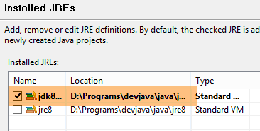 |
في السجلات التي تظهر في وحدة التحكم، من المهم أن يظهر المكون الإضافي [spring-boot-maven-plugin]. فهو الذي يقوم بإنشاء الأرشيف القابل للتنفيذ.
باستخدام وحدة التحكم، ننتقل إلى المجلد الذي تم إنشاؤه:
gs-serving-web-content-complete\target>dir
...
Répertoire de D:\data\istia-1415\spring mvc\dvp\gs-serving-web-content-complete
\target
27/11/2014 17:07 <DIR> .
27/11/2014 17:07 <DIR> ..
27/11/2014 17:07 <DIR> classes
27/11/2014 17:07 <DIR> generated-sources
27/11/2014 17:07 13 419 551 gs-serving-web-content-0.1.0.jar
27/11/2014 17:07 3 522 gs-serving-web-content-0.1.0.jar.original
27/11/2014 17:07 <DIR> maven-archiver
27/11/2014 17:07 <DIR> maven-status
- السطر 12: الملف المضغوط الذي تم إنشاؤه؛
يتم تشغيل هذا الملف المضغوط بالطريقة التالية:
gs-serving-web-content-complete\target>java -jar gs-serving-web-content-0.1.0.jar
. ____ _ __ _ _
/\\ / ___'_ __ _ _(_)_ __ __ _ \ \ \ \
( ( )\___ | '_ | '_| | '_ \/ _` | \ \ \ \
\\/ ___)| |_)| | | | | || (_| | ) ) ) )
' |____| .__|_| |_|_| |_\__, | / / / /
=========|_|==============|___/=/_/_/_/
:: Spring Boot :: (v1.1.9.RELEASE)
2014-11-27 17:14:50.439 INFO 8172 --- [ main] hello.Application : Starting Application on Gportpers3 with PID 8172 (D:\data\istia-1415\spring mvc\dvp\gs-serving-web-content-complete\target\gs-serving-web-content-0.1.0.jar started by ST in D:\data\istia-1415\spring mvc\dvp\gs-serving-web-content-complete\target)
2014-11-27 17:14:50.491 INFO 8172 --- [ main] ationConfigEmbeddedWebApplicationContext : Refreshing org.springframework.boot.context.embedded.AnnotationConfigEmbeddedWebApplicationContext@12f4ec3a: startup date [Thu Nov 27 17:14:50 CET 2014]; root of context hierarchy
ملاحظة: يجب أولاً إيقاف الخدمة الويب التي قد تكون قيد التشغيل في Eclipse (انظر الصفحة 17).
الآن بعد تشغيل تطبيق الويب، يمكن الوصول إليه باستخدام متصفح:
 |
1.6.8. نشر التطبيق على خادم Tomcat
على الرغم من أن Spring Boot يُعد عمليًا للغاية في وضع التطوير، إلا أن التطبيق في مرحلة الإنتاج سيتم نشره على خادم Tomcat حقيقي. وإليك كيفية القيام بذلك:
قم بتعديل الملف [pom.xml] بالطريقة التالية:
<?xml version="1.0" encoding="UTF-8"?>
<project xmlns="http://maven.apache.org/POM/4.0.0" xmlns:xsi="http://www.w3.org/2001/XMLSchema-instance"
xsi:schemaLocation="http://maven.apache.org/POM/4.0.0 http://maven.apache.org/xsd/maven-4.0.0.xsd">
<modelVersion>4.0.0</modelVersion>
<groupId>org.springframework</groupId>
<artifactId>gs-serving-web-content</artifactId>
<version>0.1.0</version>
<packaging>war</packaging>
<parent>
<groupId>org.springframework.boot</groupId>
<artifactId>spring-boot-starter-parent</artifactId>
<version>1.1.9.RELEASE</version>
</parent>
<dependencies>
<!-- بيئة Thymeleaf -->
<dependency>
<groupId>org.springframework.boot</groupId>
<artifactId>spring-boot-starter-thymeleaf</artifactId>
</dependency>
<!-- إنشاء ملف WAR -->
<!-- <dependency>
<groupId>org.springframework.boot</groupId>
<artifactId>spring-boot-starter-tomcat</artifactId>
<scope>provided</scope>
</dependency> -->
</dependencies>
<properties>
<start-class>hello.Application</start-class>
</properties>
<build>
<plugins>
<plugin>
<groupId>org.springframework.boot</groupId>
<artifactId>spring-boot-maven-plugin</artifactId>
</plugin>
</plugins>
</build>
<repositories>
<repository>
<id>spring-milestone</id>
<url>https://repo.spring.io/libs-release</url>
</repository>
</repositories>
<pluginRepositories>
<pluginRepository>
<id>spring-milestone</id>
<url>https://repo.spring.io/libs-release</url>
</pluginRepository>
</pluginRepositories>
</project>
يجب إجراء التعديلات في مكانين:
- السطر 9: يجب الإشارة إلى أنه سيتم إنشاء أرشيف war (Web ARchive)؛
- الأسطر 24-28: يجب إضافة تبعية إلى الأرتيفاكت [spring-boot-starter-tomcat]. يضيف هذا الأرتيفاكت جميع فئات Tomcat إلى تبعيات المشروع؛
- السطر 27: هذه المكونة هي [provided]، أي أن الملفات المضغوطة المقابلة لن يتم وضعها في ملف war الذي سيتم إنشاؤه. في الواقع، ستوجد هذه الملفات المضغوطة على خادم Tomcat الذي سيتم تشغيل التطبيق عليه؛
في الواقع، إذا نظرنا إلى التبعيات الحالية للمشروع، نلاحظ أن التبعية [spring-boot-starter-tomcat] موجودة بالفعل:
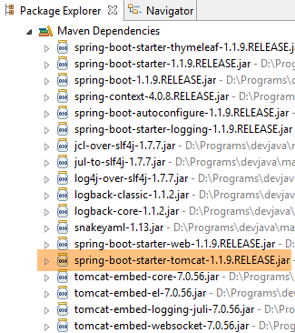 |
لذلك لا داعي لإضافتها إلى الملف [pom.xml]. وقد تم وضعها في التعليقات للتذكير.
كما يجب تكوين تطبيق الويب. وفي حالة عدم وجود الملف [web.xml]، يتم ذلك باستخدام فئة ترث من [SpringBootServletInitializer]:
 |
الفئة [ApplicationInitializer] هي كما يلي:
package hello;
import org.springframework.boot.builder.SpringApplicationBuilder;
import org.springframework.boot.context.web.SpringBootServletInitializer;
public class ApplicationInitializer extends SpringBootServletInitializer {
@Override
protected SpringApplicationBuilder configure(SpringApplicationBuilder application) {
return application.sources(Application.class);
}
}
- السطر 6: الفئة [ApplicationInitializer] تمتد من الفئة [SpringBootServletInitializer]؛
- السطر 9: يتم إعادة تعريف الطريقة [configure] (السطر 8)؛
- السطر 10: يتم توفير الفئة التي تهيئ المشروع؛
لتنفيذ المشروع، يمكن اتباع الخطوات التالية:
 |
- في [1]، يتم تنفيذ المشروع على أحد الخوادم المسجلة في Eclipse IDE؛
- في [2]، نختار [Tomcat v8.0] أعلاه؛
وبعد ذلك، يمكن طلب URL [http://localhost:8080/gs-rest-service/greeting/?name=Mitchell] في متصفح:
 |
ملاحظة: قد تفشل عملية التنفيذ هذه اعتمادًا على إصدارات [tomcat] و [tc Server Developer]. وقد حدث ذلك مع [Apache Tomcat 8.0.3 et 8.0.15] على سبيل المثال. في المثال أعلاه، كان إصدار Tomcat المستخدم هو [8.0.9].
أصبحنا الآن قادرين على إنشاء ملف war. بعد ذلك، سنواصل العمل مع Spring Boot وملف jar القابل للتنفيذ الخاص به.
1.7. مشروع Spring ثانٍ: MVC
1.7.1. مشروع العرض التوضيحي
 |
- في [1]، نقوم باستيراد أحد أدلة Spring؛
 |
- في [2]، نختار المثال [Rest Service]؛
- في [3]، نختار مشروع Maven؛
- في [4]، نأخذ النسخة النهائية من الدليل؛
- في [5]، نقوم بالتحقق من الصحة؛
- في [6]، المشروع المستورد؛
غالبًا ما تُسمى الخدمات الويب التي يمكن الوصول إليها عبر معايير URL والتي تقدم نصًا jSON بخدمات REST (REpresentational State Transfer). في هذا المستند، سأكتفي بتسمية الخدمة التي سنقوم بإنشائها بـ «خدمة ويب / jSON». تُعرف الخدمة بأنها «Restful» إذا التزمت بقواعد معينة. لم أسعَ إلى الالتزام بهذه القواعد.
لنلقِ نظرة الآن على المشروع المستورد، بدءًا من تكوين Maven الخاص به.
1.7.2. تكوين Maven
ملف [pom.xml] هو كما يلي:
<?xml version="1.0" encoding="UTF-8"?>
<project xmlns="http://maven.apache.org/POM/4.0.0" xmlns:xsi="http://www.w3.org/2001/XMLSchema-instance"
xsi:schemaLocation="http://maven.apache.org/POM/4.0.0 http://maven.apache.org/xsd/maven-4.0.0.xsd">
<modelVersion>4.0.0</modelVersion>
<groupId>org.springframework</groupId>
<artifactId>gs-rest-service</artifactId>
<version>0.1.0</version>
<parent>
<groupId>org.springframework.boot</groupId>
<artifactId>spring-boot-starter-parent</artifactId>
<version>1.1.9.RELEASE</version>
</parent>
<dependencies>
<dependency>
<groupId>org.springframework.boot</groupId>
<artifactId>spring-boot-starter-web</artifactId>
</dependency>
</dependencies>
<properties>
<start-class>hello.Application</start-class>
</properties>
<build>
<plugins>
<plugin>
<groupId>org.springframework.boot</groupId>
<artifactId>spring-boot-maven-plugin</artifactId>
</plugin>
</plugins>
</build>
<repositories>
<repository>
<id>spring-releases</id>
<url>https://repo.spring.io/libs-release</url>
</repository>
</repositories>
<pluginRepositories>
<pluginRepository>
<id>spring-releases</id>
<url>https://repo.spring.io/libs-release</url>
</pluginRepository>
</pluginRepositories>
</project>
- الأسطر 6-8: خصائص مشروع Maven. ينقص علامة [<packaging>] التي تشير إلى نوع الملف الناتج عن تجميع Maven. وفي حالة عدم وجودها، يتم استخدام النوع [jar]. وبالتالي، فإن التطبيق هو تطبيق قابل للتنفيذ من نوع وحدة التحكم، وليس تطبيق ويب حيث يكون التعبئة عندئذٍ [war]؛
- الأسطر 10-14: يحتوي مشروع Maven على مشروع أبوي [spring-boot-starter-parent]. وهو الذي يحدد الجزء الأكبر من تبعيات المشروع. قد تكون هذه التبعيات كافية، وفي هذه الحالة لا يتم إضافة المزيد، أو قد لا تكون كافية، وفي هذه الحالة يتم إضافة التبعيات الناقصة؛
- الأسطر 17-20: يجلب الأرتيفاكت [spring-boot-starter-web] معه المكتبات اللازمة لمشروع Spring MVC من نوع خدمة الويب حيث لا توجد عروض مُنشأة. يحتوي هذا الأرتيفاكت على عدد كبير جدًا من المكتبات، بما في ذلك مكتبات خادم Tomcat المدمج. وسيتم تشغيل التطبيق على هذا الخادم؛
المكتبات التي توفرها هذه التهيئة عديدة جدًّا:
 | 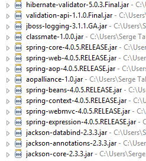 |
|
فيما يلي نرى الأرشيفات الثلاثة لخادم Tomcat.
1.7.3. بنية خدمة Spring [web / jSON]
دعونا نستعرض كيف يقوم Spring MVC بتنفيذ النموذج MVC:
 |
تتم معالجة طلب العميل على النحو التالي:
- الطلب - تكون طلبات URL المطلوبة على شكل http://machine:port/contexte/Action/param1/param2/....?p1=v1&p2=v2&... [Dispatcher Servlet] هي فئة Spring التي تعالج طلبات URL الواردة. وهي «توجه» URL إلى الإجراء الذي يجب أن يعالجها. هذه الإجراءات هي طرق لفئات معينة تسمى [Contrôleurs]. الحرف C في MVC هو هنا السلسلة [Dispatcher Servlet, Contrôleur, Action]. إذا لم يتم تكوين أي إجراء لمعالجة URL الواردة، فسترد السيرفلت [Dispatcher Servlet] بأن URL المطلوبة لم يتم العثور عليها (خطأ 404 NOT FOUND)؛
- المعالجة
- يمكن للإجراء المختار الاستفادة من المعلمات parami التي أرسلتها إليه الخدمة [Dispatcher Servlet]. وقد تأتي هذه المعلمات من عدة مصادر:
- مسار [/param1/param2/...] الخاص بـ URL،
- من المعلمات [p1=v1&p2=v2] الخاصة بـ URL,
- من المعلمات التي يرسلها المتصفح مع طلبه؛
- أثناء معالجة طلب المستخدم، قد تحتاج العملية إلى الطبقة [metier] [2b]. بمجرد معالجة طلب العميل، قد يؤدي ذلك إلى استدعاء استجابات متنوعة. ومن الأمثلة النموذجية على ذلك:
- صفحة خطأ إذا تعذر معالجة الطلب بشكل صحيح
- صفحة تأكيد في الحالات الأخرى
- تطلب الإجراء عرض طريقة عرض معينة [3]. ستعرض طريقة العرض هذه البيانات التي نسميها نموذج طريقة العرض. وهذا هو الحرف M في MVC. ستقوم الإجراء بإنشاء هذا النموذج M [2c] وستطلب عرض طريقة عرض V [3]؛
- الاستجابة - تستخدم طريقة العرض V المختارة النموذج M الذي أنشأته الإجراء لتهيئة الأجزاء الديناميكية من الاستجابة HTML التي يجب أن ترسلها إلى العميل، ثم ترسل هذه الاستجابة.
بالنسبة لخدمة ويب / jSON، يتم تعديل البنية السابقة بشكل طفيف:
 |
- في [4a]، يتم تحويل النموذج — وهو فئة Java — إلى سلسلة jSON بواسطة مكتبة jSON؛
- في [4b]، يتم إرسال هذه السلسلة jSON إلى المتصفح؛
1.7.4. وحدة التحكم C
 |
يحتوي التطبيق المستورد على وحدة التحكم التالية:
package hello;
import java.util.concurrent.atomic.AtomicLong;
import org.springframework.web.bind.annotation.RequestMapping;
import org.springframework.web.bind.annotation.RequestParam;
import org.springframework.web.bind.annotation.RestController;
@RestController
public class GreetingController {
private static final String template = "Hello, %s!";
private final AtomicLong counter = new AtomicLong();
@RequestMapping("/greeting")
public Greeting greeting(@RequestParam(value = "name", defaultValue = "World") String name) {
return new Greeting(counter.incrementAndGet(), String.format(template, name));
}
}
- السطر 9: التعليق التوضيحي [@RestController] يجعل الفئة [GreetingController] وحدة تحكم Spring، أي أن أساليبها مسجلة لمعالجة URL. لقد رأينا التعليق التوضيحي المماثل [@Controller]. وكانت نتيجة أساليب هذا المُتحكم من النوع [String]، وهو اسم العرض المطلوب عرضه. أما هنا فالأمر مختلف. تُرجع أساليب وحدة التحكم من النوع [@RestController] كائنات يتم تسلسلها لإرسالها إلى المتصفح. يعتمد نوع التسلسل الذي يتم إجراؤه على تكوين Spring MVC. هنا، سيتم تسلسلها إلى jSON. إن وجود مكتبة jSON ضمن تبعيات المشروع هو ما يجعل Spring Boot يقوم، عن طريق التكوين التلقائي، بتكوين المشروع بهذه الطريقة؛
- السطر 14: تشير العلامة التوضيحية [@RequestMapping] إلى URL الذي تعالجه الطريقة، وهو هنا URL [/greeting]؛
- السطر 15: سبق أن شرحنا التعليق التوضيحي [@RequestParam]. والنتيجة التي تُرجعها الطريقة هي كائن من النوع [Greeting].
- السطر 12: عدد صحيح طويل من النوع الذري. وهذا يعني أنه يدعم التنافس في الوصول. قد ترغب عدة خيوط في زيادة قيمة المتغير [counter] في نفس الوقت. وسيتم ذلك بشكل سليم. لا يمكن لأي خيط قراءة قيمة العداد إلا إذا كان الخيط الذي يقوم بتعديله قد أنهى تعديله.
1.7.5. النموذج M
النموذج M الناتج عن الطريقة السابقة هو الكائن [Greeting] التالي:
 |
package hello;
public class Greeting {
private final long id;
private final String content;
public Greeting(long id, String content) {
this.id = id;
this.content = content;
}
public long getId() {
return id;
}
public String getContent() {
return content;
}
}
سيؤدي تحويل هذا الكائن jSON إلى إنشاء السلسلة {"id":n,"content":"نص"}. وفي النهاية، ستكون السلسلة jSON الناتجة عن طريقة وحدة التحكم على النحو التالي:
{"id":2,"content":"Hello, World!"}
أو
{"id":2,"content":"Hello, John!"}
1.7.6. التنفيذ
 |
الفئة [Application.java] هي الفئة القابلة للتنفيذ في المشروع. وفيما يلي شفرتها:
package hello;
import org.springframework.boot.autoconfigure.EnableAutoConfiguration;
import org.springframework.boot.SpringApplication;
import org.springframework.context.annotation.ComponentScan;
@ComponentScan
@EnableAutoConfiguration
public class Application {
public static void main(String[] args) {
SpringApplication.run(Application.class, args);
}
}
لقد سبق أن تناولنا هذا الكود وشرحناه في المثال السابق.
1.7.7. تشغيل المشروع
لنقم بتشغيل المشروع:
|
نحصل على سجلات وحدة التحكم التالية:
- السطر 13: يتم تشغيل خادم Tomcat على المنفذ 8080 (السطر 12)؛
- السطر 17: السيرفلت [DispatcherServlet] موجود؛
- السطر 20: تم اكتشاف الطريقة [GreetingController.greeting]؛
لاختبار تطبيق الويب، نطلب URL [http://localhost:8080/greeting]:
 |  |
وقد تم استلام السلسلة المتوقعة jSON بنجاح.
ملاحظة: لم يعمل هذا المثال مع متصفح Eclipse المدمج.
قد يكون من المفيد الاطلاع على رؤوس الرسائل HTTP المرسلة من الخادم. وللقيام بذلك، سنستخدم المكون الإضافي لمتصفح Chrome المسمى [Advanced Rest Client] (انظر الملاحق، الفقرة 9.6):
 |
- في [1]، تم طلب URL؛
- في [2]، تُستخدم الطريقة GET؛
- في [3]، الرد jSON؛
- في [4]، أشار الخادم إلى أنه يرسل استجابة بتنسيق jSON؛
- في [5]، يُطلب نفس URL ولكن هذه المرة مع POST؛
- في [7]، يتم إرسال المعلومات إلى الخادم في شكل [urlencoded]؛
- في [6]، المعلمة name مع قيمتها؛
- في [8]، يُعلم المتصفح الخادم بأنه يرسل إليه معلومات [urlencoded]؛
- في [9]، الرد jSON من الخادم؛
1.7.8. إنشاء أرشيف قابل للتنفيذ
كما فعلنا في المشروع السابق، نقوم بإنشاء ملف مضغوط قابل للتنفيذ:
 |
 |
- في [1]: يتم تنفيذ هدف Maven؛
- في [2]: يوجد هدفان (goals): [clean] لحذف المجلد [target] من مشروع Maven، و[package] لإعادة إنشائه؛
- في [3]: سيتم إنشاء المجلد [target] في هذا المجلد؛
- في [4]: يتم إنشاء الهدف؛
في السجلات التي تظهر في وحدة التحكم، من المهم أن يظهر المكون الإضافي [spring-boot-maven-plugin]. فهو الذي يقوم بإنشاء الأرشيف القابل للتنفيذ.
باستخدام وحدة التحكم، ننتقل إلى المجلد الذي تم إنشاؤه:
D:\Temp\wksSTS\gs-rest-service\target>dir
...
11/06/2014 15:30 <DIR> classes
11/06/2014 15:30 <DIR> generated-sources
11/06/2014 15:30 11 073 572 gs-rest-service-0.1.0.jar
11/06/2014 15:30 3 690 gs-rest-service-0.1.0.jar.original
11/06/2014 15:30 <DIR> maven-archiver
11/06/2014 15:30 <DIR> maven-status
...
- السطر 5: الملف المضغوط الذي تم إنشاؤه؛
يتم تشغيل هذا الملف المضغوط بالطريقة التالية:
D:\Temp\wksSTS\gs-rest-service-complete\target>java -jar gs-rest-service-0.1.0.jar
. ____ _ __ _ _
/\\ / ___'_ __ _ _(_)_ __ __ _ \ \ \ \
( ( )\___ | '_ | '_| | '_ \/ _` | \ \ \ \
\\/ ___)| |_)| | | | | || (_| | ) ) ) )
' |____| .__|_| |_|_| |_\__, | / / / /
=========|_|==============|___/=/_/_/_/
:: Spring Boot :: (v1.1.0.RELEASE)
2014-06-11 15:32:47.088 INFO 4972 --- [ main] hello.Application
: Starting Application on Gportpers3 with PID 4972 (D:\Temp\wk
sSTS\gs-rest-service-complete\target\gs-rest-service-0.1.0.jar started by ST in
D:\Temp\wksSTS\gs-rest-service-complete\target)
...
ملاحظة: يجب أولاً إيقاف خدمة الويب التي قد تكون قيد التشغيل في Eclipse (انظر الفقرة 1.6.6).
الآن بعد أن تم تشغيل تطبيق الويب، يمكن الوصول إليه عبر متصفح:
 |
1.7.9. نشر التطبيق على خادم Tomcat
كما فعلنا في المشروع السابق، نقوم بتعديل الملف [pom.xml] بالطريقة التالية:
<?xml version="1.0" encoding="UTF-8"?>
<project xmlns="http://maven.apache.org/POM/4.0.0" xmlns:xsi="http://www.w3.org/2001/XMLSchema-instance"
xsi:schemaLocation="http://maven.apache.org/POM/4.0.0 http://maven.apache.org/xsd/maven-4.0.0.xsd">
<modelVersion>4.0.0</modelVersion>
<groupId>org.springframework</groupId>
<artifactId>gs-rest-service</artifactId>
<version>0.1.0</version>
<packaging>war</packaging>
...
</project>
- السطر 9: يجب الإشارة إلى أننا سنقوم بإنشاء أرشيف war (Web ARchive)؛
كما يجب تكوين تطبيق الويب. وفي حالة عدم وجود ملف [web.xml]، يتم ذلك باستخدام فئة ترث من [SpringBootServletInitializer]:
 |
الفئة [ApplicationInitializer] هي كما يلي:
package hello;
import org.springframework.boot.builder.SpringApplicationBuilder;
import org.springframework.boot.context.web.SpringBootServletInitializer;
public class ApplicationInitializer extends SpringBootServletInitializer {
@Override
protected SpringApplicationBuilder configure(SpringApplicationBuilder application) {
return application.sources(Application.class);
}
}
- السطر 6: الفئة [ApplicationInitializer] تمتد من الفئة [SpringBootServletInitializer]؛
- السطر 9: تم إعادة تعريف الطريقة [configure] (السطر 8)؛
- السطر 10: يتم توفير الفئة التي تهيئ المشروع؛
لتنفيذ المشروع، يمكن اتباع الخطوات التالية:
 |
- في [1-2]، يتم تنفيذ المشروع على أحد الخوادم المسجلة في Eclipse IDE؛
وبعد ذلك، يمكن طلب URL [http://localhost:8080/gs-rest-service/greeting/?name=Mitchell] في متصفح:
|
1.8. Conclusion
لقد أدخلنا نوعين من مشاريع Spring MVC:
- مشروع حيث يرسل تطبيق الويب دفقًا HTML إلى المتصفح. يتم إنشاء هذا الدفق بواسطة محرك العروض [Thymeleaf]؛
- مشروع حيث يرسل تطبيق الويب دفقًا jSON إلى المتصفح؛
في الحالة الأولى، يحتاج المشروع إلى تبعيتين من Maven:
<parent>
<groupId>org.springframework.boot</groupId>
<artifactId>spring-boot-starter-parent</artifactId>
<version>1.1.9.RELEASE</version>
</parent>
<dependencies>
<dependency>
<groupId>org.springframework.boot</groupId>
<artifactId>spring-boot-starter-thymeleaf</artifactId>
</dependency>
</dependencies>
في الحالة الثانية، تكون تبعيات Maven كما يلي:
<parent>
<groupId>org.springframework.boot</groupId>
<artifactId>spring-boot-starter-parent</artifactId>
<version>1.1.9.RELEASE</version>
</parent>
<dependencies>
<dependency>
<groupId>org.springframework.boot</groupId>
<artifactId>spring-boot-starter-web</artifactId>
</dependency>
</dependencies>
التبعيات التي تنشأ بشكل متسلسل عن هذه التكوينات كثيرة جدًا، والكثير منها غير ضروري. لتشغيل التطبيق، سنستخدم تكوينًا يدويًّا لـ Maven لا يتضمن سوى التبعيات الضرورية للمشروع.
سنعود الآن إلى أساسيات برمجة الويب من خلال عرض مفهومين أساسيين:
- التواصل HTTP (بروتوكول النقل HyperText) بين المتصفح وتطبيق الويب؛
- لغة HTML (لغة الترميز HyperText) التي يفسرها المتصفح لعرض الصفحة التي تلقّاها؛